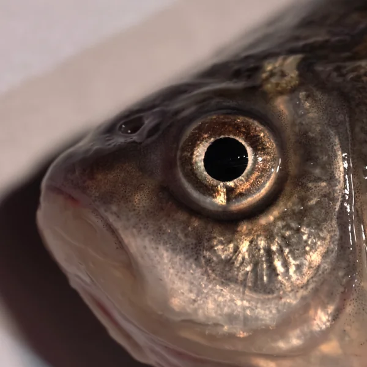

使用指南
三步上手 鲜眸（FreshEye），轻松检测水产品新鲜度
三步使用流程
上传鱼眼照片
支持点击上传、拖拽、剪贴板粘贴三种方式，移动端还可直接调用相机拍照。JPG/PNG/WebP 格式，最大 25MB。
AI 秒级分析
AI 分析鱼眼特征，给出高度新鲜 / 新鲜 / 不新鲜三种结果，并同步生成可解释热力图展示判断依据。系统还会根据判断把握自动提示是否重新拍摄。
查看分析报告
4-Tab 报告自由切换：概览（新鲜度等级 + 判断把握）、AI 视觉（热力图滑块对比）、详细报告（详细分析）、处理建议（5 大类建议）。
拍照教程
好的照片是准确检测的前提。请参考以下正确与错误示例对比，拍摄时遵循正确示例的要求。

把鱼眼对准圆圈中心手机拍照时，取景画面中会出现圆形引导框。请把鱼眼完整放进圆圈内，保持正面、清晰、光线充足，这样识别更准确。
- 正面拍摄鱼眼：镜头正对鱼眼，避免侧角
- 光线充足：自然光或白色光源，均匀照亮鱼眼
- 距离适中：10–30cm，鱼眼占图片面积 30% 以上
- 对焦清晰：点击屏幕对焦鱼眼，确保瞳孔/角膜细节可见
- 擦干水分：拍照前擦干鱼眼表面，避免反光
- 侧面角度：鱼眼变形，关键特征缺失
- 光线不足：昏暗环境致噪点高、细节丢失
- 距离过远/过近：鱼眼太小或失焦模糊
- 模糊失焦：手抖或未对焦，瞳孔边界不清
- 反光遮挡：强光直射或水珠反光遮盖角膜
常见问题 FAQ
支持 JPG / PNG / WebP 三种常见图片格式，单张图片最大 25MB。建议使用原图上传，避免过度压缩导致鱼眼细节丢失。
通常 3–10 秒即可完成分析。首次使用可能需要 20–30 秒唤醒 AI 服务（Hugging Face Spaces 冷启动），后续检测会显著加快。
当判断把握低于 60% 时会弹出提示。建议重新拍摄：确保鱼眼清晰可见、光线充足、正面拍摄、对焦准确。若多次重拍把握仍低，可能为少见鱼种或质量边界样本，建议结合人工判断。
当 AI 服务未启动或网络不可达时，分析会失败并明确提示"AI 服务未运行"。此时不会生成任何模拟结果，请等待服务启动后重试。历史记录仍可查看。
历史记录保存在本地浏览器 localStorage，最多 50 条，不会上传服务器。清除浏览器数据或更换设备后记录将丢失。建议定期清理以释放存储空间。
是的。系统会自动读取照片的 EXIF 方向信息，在分析前将图片旋转至正确方向，确保手机竖拍或横拍的照片都能被正确识别。
可以。点击历史记录标题旁的"清空全部"按钮，确认后即可一键删除所有历史记录（含收藏）。此操作不可撤销。
AI 经过大量真实鱼眼照片训练，支持常见淡水鱼（鲫鱼、稻花鱼等）。海水鱼也可参考使用——鱼眼新鲜度特征在不同鱼种间具有共性（瞳孔清澈度、角膜浑浊度等），但海水鱼结果仅供参考。